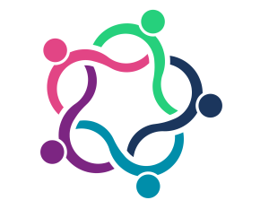

Региональное Общественное Движение «САЭНА»
 В течение нескольких последних десятилетий медицинская наука, бесспорно, добилась очень больших успехов. Новые методы лечения и новые лекарства существенно облегчают страдания больных и избавляют от многих болезней. Но на месте решенных проблем возникают новые. Все чаще случается, что, хотя заболевание не удается излечить до конца, его проявления облегчаются настолько, что человек может жить полноценной жизнью вопреки болезни. Однако этому надо научиться, что совсем не просто. Трудность состоит не только в том, что болезнь накладывает определенные ограничения. Часто, особенно при психических заболеваниях, оказывается, что наиболее трудные проблемы связаны с бытующими у нас предубеждениями и предрассудками. К сожалению, обычное представление о том, что такое психически больной, очень мало соответствует действительности. Многие считают, что такой человек неизлечим, непредсказуем и опасен, и поэтому стараются держаться от него подальше. Иногда так думают и сами больные; из-за этого они начинают ощущать себя «людьми второго сорта».
Все это происходит потому, что люди (и здоровые, и больные) очень мало знают о психических заболеваниях, о методах их лечения и о возможности выздороветь. Кроме того, симптомы психических болезней мало похожи на «обычные». Из-за этого человек, заболевший психическим расстройством, наталкивается на непонимание даже со стороны близких ему людей и оказывается в изоляции. Обсудить свои проблемы ему практически не с кем.
Путь к преодолению этих трудностей лежит через знания. Люди должны больше знать о психических расстройствах. В первую очередь в этом нуждаются сами больные и их родственники. Они должны иметь возможность:
- обсуждать свои проблемы в атмосфере понимания и дружелюбия;
- узнать, что представляет собой их болезнь, научиться различать правду и мифы о ней;
- научиться ориентироваться в многочисленных методах лечения и лекарствах, оценивать их эффективность, справляться с их побочными действиями;
- восстановить уверенность в себе в окружении людей, свободных от предрассудков и предубеждений;
- найти применение своим способностям;
- найти место, где можно все это осуществить.
Все эти задачи могут быть решены в группах взаимной поддержки в сообществе, где каждый нуждается во всех, и все нуждаются в каждом. Именно их созданию и продвижению посвящен данный сайт.